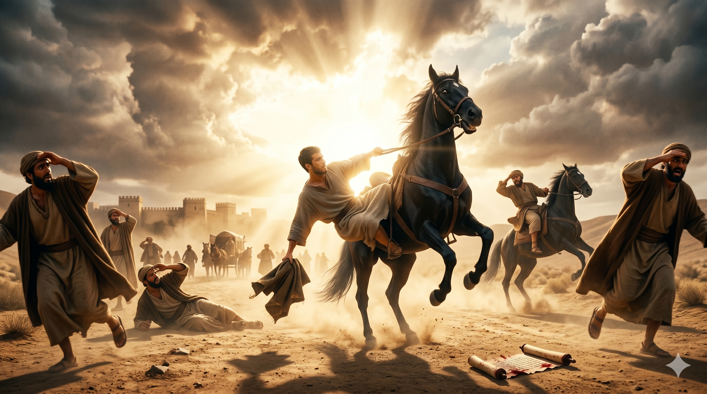

스데반의 순교 현장을 목격한 청년 사울 — 돌들이 떨어지는 가운데 무릎 꿇어 용서를 기도하는 스데반을 바라보는 사울의 얼굴 위로 깊은 갈등과 각인이 새겨지는 순간
"증인들이 옷을 벗어 사울이라 하는 청년의 발 앞에 두니라 … 사울은 그가 죽임 당함을 마땅히 여기더라 … 내가 주의 증인 스데반의 피를 흘릴 때에 내가 곁에 서서 찬성하고 그 죽이는 사람들의 옷을 지킨 줄 주도 아시나이다" — 사도행전 7:58; 8:1; 22:20
스데반의 순교 현장에는 사울이라는 청년이 있었습니다. 그는 단순한 방관자가 아니었습니다. 증인들의 옷을 맡아 지켰고, 스데반의 죽음을 "마땅히 여겼습니다"(행 8:1). 그는 찬성했습니다. 훗날 바울 자신이 고백했듯이, 그는 스데반의 죽음에 적극적으로 동참한 공모자였습니다(행 22:20). 그런 사울이 다메섹 도상에서 부활하신 주님을 만나 바울이 됩니다. 역사의 가장 놀라운 반전 중 하나입니다. 박해자가 복음의 가장 위대한 전도자로 바뀌는 이 변화 — 그 씨앗이 스데반의 순교 현장에 이미 심겨져 있었습니다.
신학자 아우구스티누스는 이렇게 말했습니다. "스데반이 기도하지 않았다면 교회는 바울을 갖지 못했을 것이다." 스데반의 마지막 기도 — "주여, 이 죄를 그들에게 돌리지 마옵소서" — 는 단지 아름다운 용서의 몸짓이 아니었습니다. 그것은 사울을 포함한 박해자들을 위한 중보였습니다. 그 기도가 응답되어 사울이 바울이 되었고, 바울은 이방 세계 전체로 복음을 들고 나아갔습니다. 스데반의 한 죽음이 수천 만 명의 구원의 씨앗이 된 것입니다. 이것이 순교의 신학입니다. 피가 교회의 씨앗이 된다(Sanguis martyrum semen ecclesiae)는 터툴리아누스의 고백이 스데반에게서 가장 먼저 실현되었습니다.

다메섹 도상에서 빛에 쓰러진 사울 — 스데반의 순교를 목격한 그 눈에 이제 부활하신 주님의 빛이 쏟아지는 장면, 한 죽음이 시작한 연쇄적 역사의 전환점
스데반의 죽음은 당장 아무것도 바꾸지 않은 것처럼 보였습니다. 오히려 박해가 더 심해졌습니다(행 8:1). 그러나 하나님은 그 죽음을 역사의 전환점으로 사용하고 계셨습니다. 우리가 헌신하고 희생하고 기도해도 당장 결과가 보이지 않을 때가 있습니다. 그럴 때 스데반을 기억하십시오. 우리의 순종과 기도는 우리 눈에 보이지 않는 방식으로 하나님의 역사를 이어가고 있습니다. 내가 심은 씨앗을 내가 거두지 못할 수 있습니다. 그러나 그 씨앗은 반드시 자랍니다.
스데반이 원수를 위해 기도했을 때, 그 원수 중 한 명이 바울이 되었습니다. 우리가 기도하는 누군가 — 지금은 복음에 적대적이고, 우리를 힘들게 하는 그 사람 — 이 훗날 놀라운 하나님의 사람이 될 수 있습니다. 포기하지 마십시오. 원수를 위한 기도는 결코 헛되지 않습니다. 스데반의 순교가 바울을 낳았듯, 당신의 기도가 누군가의 삶을 바꿀 수 있습니다.
스데반이 기도하지 않았다면, 교회는 바울을 갖지 못했을 것입니다.
당신의 기도 한 마디가 누군가의 역사를 바꿀 수 있습니다.
오늘, 당신을 힘들게 하는 그 사람을 위해 기도하십시오.